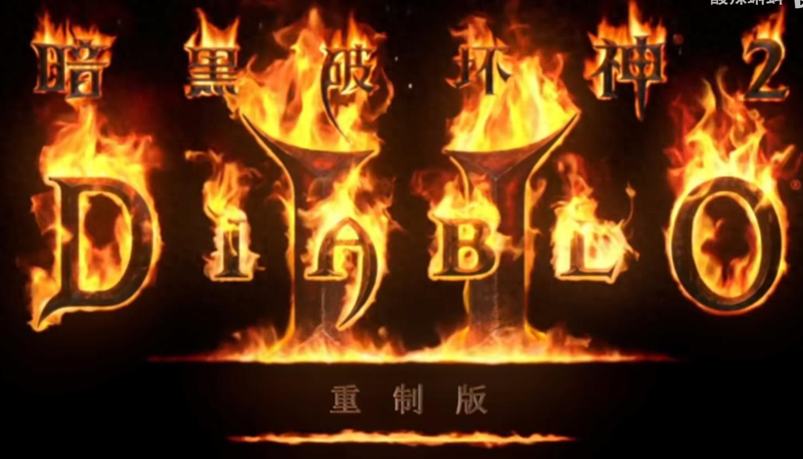

玩暗黑2重制版头两年，我一直觉得自己算个老手。直到第无数次在专家级模式里躺在地上看灰屏，我才意识到一件事——这游戏里“知道”和“做到”之间，隔着几十条命。最颠覆我认知的一条教训是：防御值比你想的重要得多，但它不靠堆装备，靠的是操作习惯。高手和普通玩家最大的区别，也从来不是装备好坏，而是他们知道什么时候该打、什么时候该撤，以及怎么用手头的破烂玩意儿撑过最难的那段开荒期。
下面这50条，是我死了又死、洗了点又洗之后攒下来的。不都是金科玉律，但每一条都赔过我的命或烧过我的符文。

▎操作与战斗手感
1移位键（默认Shift）是站定输出，别管远程近战，养成按住Shift攻击的习惯，能少射歪一半的箭。2快速喝药不用开背包，腰带上的药水对应1-4号键，按住Shift再按是喂给佣兵。3法师传送不是让你往怪堆正中间扎的。我传送落地暴毙少说二十次，后来改成落点选在怪物群边缘或障碍物后方，存活率直线上升。4亚马逊冲怪堆射多重箭时，一定给自己留个退路角度，别贴墙站。我被逼在墙角被近战怪围死过太多次，从那以后进图先看身后有没有空间。5跑步和走路要切换着用。防御在跑步时归零，遇到危险路段改成走路，格挡和防御都还在。6快捷键设顺手比什么都重要。我试过把传送放F1、大招放F2，手够不着，改了三次才找到适合自己的键位。7被冰冻了别硬撑，喝溶解药剂能解。这玩意儿便宜，身上常备三四瓶不占地方。8打BOSS前先清一圈小怪，别想着绕过去。回头被小怪堵门比BOSS本人还危险。9法师的静态力场对BOSS按百分比削血，地狱难度下能削到50%左右，起手先放三次再换主攻技能，效率翻倍。10走位时别直来直去，养成绕圈的习惯。很多投射物是直线飞行，绕一绕就躲开了。
▎装备辨识与底材选择
1白色/灰色装备别急着扔，带“超强”前缀的可能是好底材，做符文之语前先查清楚该用哪种底材。2符文之语底材要求“普通”品质，带蓝色金色暗金都不行，我已经浪费过两套符文才知道。3无形的装备不能修，但佣兵用不耗耐久。所以好底材给佣兵做符文之语，选无形的，防御或伤害更高。4四孔长柄战斧是佣兵刚需，精神剑用四孔水晶剑，统盾是精神盾最优底材——这几个记住了能少花一半冤枉钱。5亮金装备最多六条词缀，别被一堆绿字唬住，真正有用的词缀就那几条：技能等级、施法速度、抗性、生命法力。6蓝色装备虽然只有两条词缀，但有些词缀组合比暗金还猛，比如+3技能再加20%施法速度的蓝杖，值得留着对比。7装备上的“无法冰冻”词缀非常关键，尤其是近战角色，被冻住等于慢性死亡。8戒指项链的属性优先级看职业：法系优先施法速度，物理系优先双吸和命中的收益。9护身符（GC/LC/SC）别乱扔，加技能的大板子、加抗性的小板子都能卖出价，哪怕属性一般也先留着凑抗性。10辨识卷轴买够，身上常备两捆。打出来一堆暗金没卷轴辨识，回城再跑回来太折腾。
▎任务流程与关键节点
1第一幕女伯爵必刷，普通难度就掉符文，前期做“隐秘”“天底”全靠她。2第二幕的赫拉迪克方块是核心工具，合成、打孔、升级装备都靠它，拿完别放仓库，随身带着。3第三幕的“黄金鸟”任务给20点生命上限，别跳过，蚊子腿也是肉。4第四幕敲石头（地狱熔炉）给符文，最高能出25号，每个角色只能敲一次，别用小号随便敲了。5第五幕的三个远古人在亚瑞特山顶，打不过就开传送门回城，再进去重新打——我头回不知道，死了直接退游戏，跑图跑到崩溃。6普通难度通关后进噩梦前，先把抗性补一补，噩梦开始减抗性，裸奔进去就是送。7每个难度的“拯救安雅”任务给全抗性卷轴，必做，别跳过直接去刷图。8拿地狱火炬需要打六个超级BOSS，准备工作做足，钥匙攒够再去，别半路发现少一把。9任务打孔有公式：普通武器/盔甲用拉尔+阿姆+完美紫宝石，但最好的打孔方式其实是任务奖励，第五幕的铁匠给一次打孔机会。10每个角色只有三次任务打孔（三个难度各一次），想好了再用，别手滑打在垃圾装备上。
▎佣兵管理
1第二幕的佣兵（米山）是万金油，带防御光环或力量光环的优先雇佣，别瞎选。2佣兵装备优先堆抗性和吸血，活着才有输出。吸血头+高伤武器+高防衣服是标准三件套。3佣兵死了别硬扛，回城复活只要几千金币，比你自己硬撑到死划算。4给佣兵喂药按Shift+药水键，战斗中能救他命，别光顾着自己喝。5噩梦难度第二幕的防御米山带冰冻光环，能冻住小怪，安全性大幅提升，很多人到了地狱才换，其实噩梦就该换。6佣兵的装备也有力量敏捷要求，给之前先看他穿不穿得上，我做过一把符文之语结果米山力量不够，白瞎了。7佣兵升级慢？带他刷你等级相近的场景，别去太低级的图，经验收益差。8第五幕的野蛮人佣兵输出高但脆，适合某些特定流派，新手还是优先米山。
▎赛季节奏与交易经济
1赛季初期别攒符文，该用的就用。“隐秘”符文之语（7+5）开荒期能穿很久，别舍不得那两枚小符文。2交易时别只盯着高号符文，完美宝石、杂色宝石、低级符文都能换东西，积少成多。3赛季末符文贬值很快，好东西早出手，别捂到最后一刻。4逛交易频道时留意别人收什么，顺手捡的底材可能卖出去，我靠卖白统盾换过两个24号。5搬砖刷符文的话，地狱女伯爵、崔凡克议会、牛场这三个场景效率最高，别东一榔头西一棒子。6角色练到90级以后死亡掉的经验很疼，我90级死一次掉了将近一格经验，刷了两天才补回来。所以高等级以后稳字当头，别浪。
▎给新手的几个个人教训
最后集中说几条我的翻车实录，如果你刚入坑，这些能帮你省下不少重修费。
第一，我第一次玩死灵法师，召唤流加错了点，把骷髅 mastery 和 summon resist 都点满了才发现伤害不够，洗点洗了三次才顺手。后来才知道，优先点满骷髅召唤和支配，其他的点到够用就行。
第二，打地狱难度安达利尔的时候，我扛着毒硬上，死了七八次，后来才想起来可以带解毒药剂——提前喝一瓶能加抗性，不是中毒了才喝。这个细节我愣是到第三个角色才反应过来。
第三，仓库里符文我一开始全留着，堆得满满当当也不舍得用，结果该做符文之语的时候发现没有低号符文，还得回头去刷女伯爵。现在我的习惯是：低号符文够用就做，别攒，高号符文才值得存。
▎容易被忽略的细节
1你的移动速度影响怪物的命中判定，跑得快等于变相加闪避。2背包里留四五格空位，捡东西不用来回倒腾，效率高很多。3地图显示按Tab，能调透明度，别挡着视野还能看路。4暗金和绿色套装在地上显示橙色和绿色，但有些亮金装备比暗金还好，别只看颜色判断。5每日首杀BOSS（安达利尔、都瑞尔等）掉落更好，不是玄学，是游戏机制。6多开房间刷BOSS比反复建房间效率更高，一趟刷完所有BOSS再重置，省去大量加载时间。7心态放平。这游戏本质是刷子游戏，出货靠运气，不出货也正常。我刷了三百场牛场没出过30号，但某天随手翻个箱子掉了29号，没处说理去。
这50条里，新手我建议优先盯住第7、22、39条——备好解冻药、随身带方块、别舍不得做低级符文之语。先把这三项改过来，你的开荒体验会比大多数新人顺一大截。老手的话，第5、16、44条可能被你忽略了，回去调整一下操作习惯，少躺一次就是赚到。
说到底，暗黑2玩的是耐性。装备总会有的，符文总会掉的，但活下来的习惯得自己练出来。祝你好运，庇护所见。